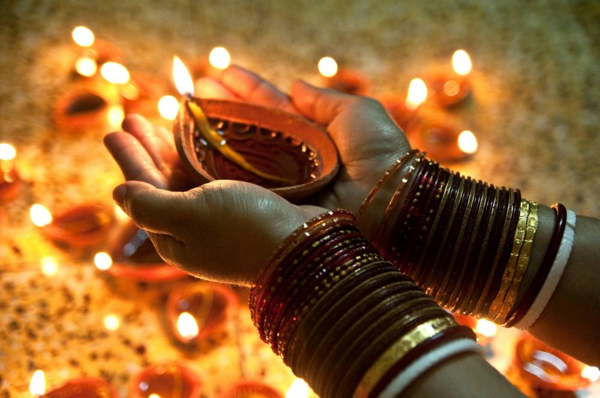
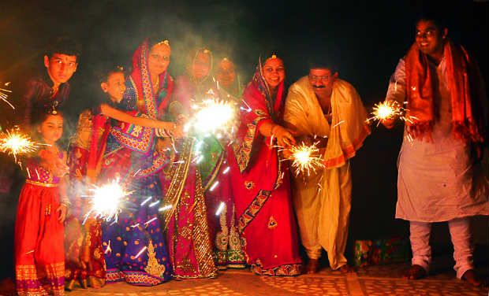
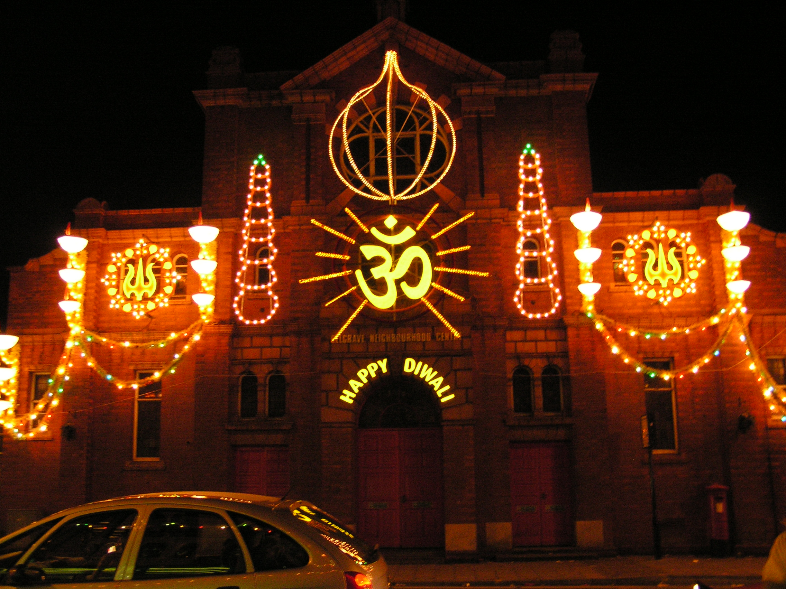

"Diwali", the festival of lights, illuminates the darkness of the New Year's moon, and strengthens our close friendships and knowledge, with a self-realization!
Diwali is celebrated on a nation-wide scale on Amavasya - the 15th day of the dark fortnight of the Hindu month of Ashwin, (October/November) every year. It symbolizes that age-old culture of India which teaches to vanquish ignorance that subdues humanity and to drive away darkness that engulfs the light of knowledge. Diwali, the festival of lights even to-day in this modern world projects the rich and glorious past of India.
Every year on the dark nights of Diwali the sound of firecrackers announces the celebration of the favorite festival of Indians. Homes are decorated, sweets are distributed by everyone and thousands of lamps are lit to create a world of fantasy. Of all the festivals celebrated in India, Diwali is by far the most glamorous and important. Enthusiastically enjoyed by people of every religion, its magical and radiant touch creates an atmosphere of joy and festivity.
The ancient story of how Diwali evolved into such a widely celebrated festival is different in various regions and states of India. In the north, particularly in Uttar Pradesh, Punjab, Haryana, Bihar and the surrounding areas, Diwali is the day when King Rama's coronation was celebrated in Ayodhya after his epic war with Ravana, the demon king of Lanka. By order of the royal families of Ayodhya and Mithila, the kingdom of which Sita was princess, the cities and far-flung boundaries of these kingdoms were lit up with rows of lamps, glittering on dark nights to welcome home the divine king Rama and his queen Sita after 14 years of exile, ending with an across-the-seas war in which the whole of the kingdom of Lanka was destroyed.